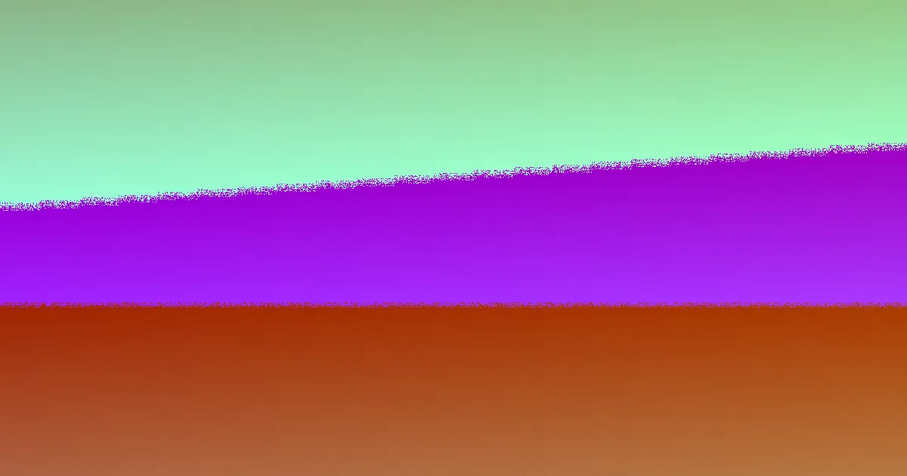

When seeking retaining wall builders in Toowoomba for 2026, focus on four critical factors: the presence of reactive black soil, the site's slope, effective drainage solutions, and necessary council approvals. Walls exceeding 1.0 metre in height, or those supporting driveways or buildings, mandate engineering to AS 4678, RPEQ certification, and Toowoomba Regional Council approval. Ensure quotes detail footing, drainage, and compliance requirements.
For local buyers, retaining wall builders toowoomba understanding the specific site conditions and regulatory requirements is paramount.
Retaining Wall Builders Toowoomba Explained
Toowoomba's landscape, characterised by steep range blocks and reactive black soil, presents unique challenges for retaining walls. When discussing options with retaining wall builders in Toowoomba, the initial conversation should cover retained height, slope, potential loads, excavation access, and how water will be managed post-construction. The available wall types, including concrete sleeper, timber sleeper, Besser block, rock, boulder, and gabion walls, should be viewed as site-specific solutions rather than mere aesthetic choices. A low garden terrace, a boundary wall, and a wall supporting a driveway each have distinct footing, drainage, and approval considerations.
For a broader perspective on local retaining wall needs, exploring comprehensive guides can offer valuable insights into regional challenges and best practices.
Quote Checks That Reveal Scope
A comprehensive written quote should illuminate all aspects of the project, not just the visible face of the wall. Durability and longevity are intrinsically linked to proper footings, effective subsoil drainage, and adherence to all necessary approvals. Therefore, a quote should extend beyond mere dimensions and material choices to encompass:
- Site Conditions: Details on slope, retained height, site access, boundary proximity, and any nearby structures.
- Wall Type: Specification of the chosen material (sleepers, blocks, rock, boulder, gabion) and its suitability for the specific application.
- Drainage: Clear plans for ag-drainage, gravel backfill, geofabric installation to prevent soil ingress, and a lawful stormwater discharge point within the property boundary.
- Approvals: Confirmation of whether the wall's height or the load it retains necessitates engineering design, certification, and local council approval.
- Finish: How the backfill, capping, and final clean-up integrate with existing or planned paths, fences, or garden beds.
When comparing quotes, scrutinise the inclusions. A lower price might reflect a quote that excludes crucial elements like design, excavation, drainage, or the approval process, which could lead to unforeseen costs later.
Engineering and Approval Triggers
A critical threshold for retaining walls is the 1.0-metre height mark, or when a wall is required to support a driveway or building. Beyond this point, compliance with the AS 4678 engineering standard becomes mandatory. This typically involves obtaining RPEQ (Registered Professional Engineers of Queensland) certification, often through Form 15 and Form 16 documents, and securing approval from the Toowoomba Regional Council before construction commences. The load a wall must bear is a significant consideration, even for walls that appear modest. Any wall situated near a driveway, structure, boundary, or involving significant cut-and-fill operations warrants a direct inquiry into who will identify the load case, engage the necessary engineering expertise, and manage the approval documentation.
For existing walls showing signs of distress, such as leaning, bulging, or cracking, a thorough assessment is crucial before accepting a quote for replacement. These issues often indicate underlying problems like inadequate drainage, insufficient footings, or a wall type that was unsuitable for the site conditions.
Choosing the Right Wall Type
The selection of a retaining wall material should be driven by the site's specific demands. Concrete sleepers, reinforced with galvanised steel posts, offer a practical solution for many local sites. Timber sleepers are often best suited for garden terraces and low boundary walls where aesthetic integration is key. For taller, engineered retaining structures or where a rendered finish is desired, core-filled Besser block walls are a common choice. Rock, boulder, and gabion walls are typically employed in situations involving slopes or where free-draining conditions are prevalent.
When constructing on steep terrain, consider how the chosen system impacts the required footprint, backfill volume, drainage strategy, and the accessibility for construction machinery. For installations on narrow boundaries, careful planning is needed to ensure posts, footings, or gabion baskets do not create unresolved drainage issues behind the wall. Regardless of the material selected, the question of effective drainage remains paramount. This involves incorporating ag-drainage systems, using free-draining gravel backfill, employing geofabric to prevent clay migration into the drainage layer, and ensuring a legal connection to a stormwater outlet situated within the property boundaries.
- Describe the Site. Provide details on wall height, length, slope, site access, nearby structures, and any visible signs of water issues or wall movement.
- Ask About Approval. Confirm whether the wall's height or retained load necessitates AS 4678 engineering, RPEQ certification, and Toowoomba Regional Council approval.
- Check Drainage Detail. Inquire about the placement and specifications for ag-drainage, gravel, geofabric, and the stormwater connection in the final build.
- Compare Written Scope. Evaluate quotes based on included design, excavation, footings, drainage, backfill, and clean-up, not solely on price.
| Scenario | Main Question | What to Confirm |
|---|---|---|
| Low garden or terrace wall | Is it mainly landscape shaping? | Material, drainage allowance, backfill and finish. |
| Wall over 1.0 metre | Does engineering and approval apply? | AS 4678 design, RPEQ certification and council approval responsibility. |
| Wall supporting driveway or building | What load is being retained? | Engineer input, footing design, drainage and certificate pathway. |
| Failing or cracked wall | Why did the wall move? | Assessment of underlying causes, proposed repair scope, and preventative measures. |
Common questions
What triggers the need for engineering and council approval for retaining walls in Toowoomba? Walls exceeding 1.0 metre in height, or those supporting a driveway or building, generally require engineering design to AS 4678, RPEQ certification, and approval from the Toowoomba Regional Council.
What are the key considerations for drainage with retaining walls? Effective drainage involves installing ag-drainage pipes, using free-draining gravel backfill, employing geofabric to prevent soil intrusion, and ensuring a lawful connection to a stormwater outlet within the property boundary.
How should I compare quotes from different retaining wall builders? Compare quotes by examining the scope of work included, such as design, excavation, footings, drainage, backfill, and clean-up, rather than focusing solely on the price. Ensure all necessary approvals and engineering are accounted for.
Toowoomba and Darling Downs homeowners seeking structural retaining wall solutions.